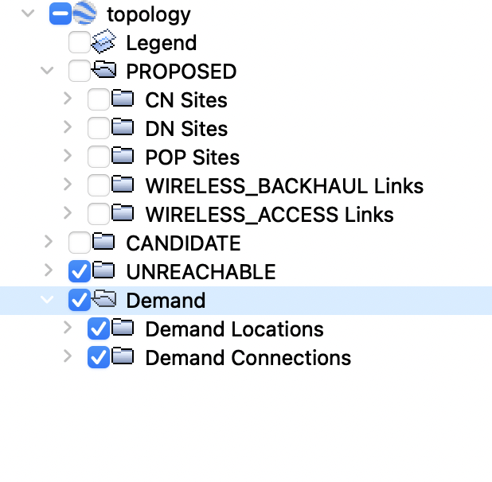

Output Files
This page describes all the possible output files from the Terragraph Planner, including topology kml files, reporting csv files, and ILP problem files.
Topology KML File
The Topology object can be exported in the KML format using write_to_kml_file.
There are different kinds of topologies that represent different stages in a
planner, such as the candidate topology and reporting topology.
- The candidate topology is a topology that is generated by an LOS Analysis plan and can be directly used as an input for an Optimization plan.
- The reporting topology is the final topology of an End-to-End plan or Optimization plan. It contains the optimized network, but also the candidate site and link information for convenient reference.
Visualization
All the output KML files can be visualized with Google Earth or other GIS tools like QGIS.
The output topology KML files primarily provide 3 kinds of information, which are site information, link information and demand information. The figure below is a example of the folder structure of the output topology kml file in Google Earth.

As shown, the top folders are named by the status of the sites and links. Under the status folders, there are CN sites, DN sites, POP sites, WIRELESS_BACKHAUL Links, WIRELESS_ACCESS Links and ETHERNET Links (which is not shown in the example). These contain the placemarks and lines representing the corresponding sites or links with the specific status and type. There is also a Demand folder which shows the demand sites and connections to the physical sites in the corresponding subfolders.
Each site or link has its own attributes in the data field.
Site Attributes
- Site Type: Type of the site, which can be
CN,DNorPOP. This should match the site type of the folder. - Site Geohash: A hash indicating the location of the site.
- Altitude: Altitude relative to the mean sea level in meters.
N/Aif the altitude is not determined. - Status: Status type of the site, which can be
EXISTING,PROPOSED,CANDIDATE,UNREACHABLEorUNAVAILABLE. This should match the status type of the folder. - Polarity: Polarity of the site, which can be
ODD,EVENorUNASSIGNED. - Location Type: Type of the location, which can be
ROOFTOP,STREET_LEVELorUNKNOWN. - Device SKU: The SKU of the device mounted on this site.
- Number of Subscribers: Number of the subscribers (see Tiered Service).
Link Attributes
- Link Type: Type of the link, which can be
WIRELESS_BACKHAUL,WIRELESS_ACCESSorETHERNET. Wired links have typeETHERNET. Wireless links where both end-sites are POPs/DNs areWIRELESS_BACKHAUL. Wireless links between a POP/DN and a CN areWIRELESS_ACCESS. - Tx Site Name: The name of the transmitting site.
- Rx Site Name: The name of the receiving site.
- Status: Status type of the link, which can be
EXISTING,PROPOSED,CANDIDATE,UNREACHABLEorUNAVAILABLE. This should match the status of the folder. - Distance: Length of the link in meters.
- Data flow (Gbps): Estimated data flow on the link in Gbps (non-zero for reporting topology only).
- Throughput (Gbps): The capacity of the link in Gbps.
- Utilization: Data flow divided by the throughput value. In other words, the estimated percentage of link capacity that will be utilized (non-zero for reporting topology only).
- Tx Beam Azimuth: Azimuth of the link in txrx direction.
- Rx Beam Azimuth: Azimuth of the link in rxtx direction.
- Deviation from Tx Boresight: The angle (in degrees) between the horizontal orientation of the tx sector and the link.
- Deviation from Rx Boresight: The angle (in degrees) between the horizontal orientation of the rx sector and the link.
- Deviation from El Boresight: The vertical angle (in degrees) between the link and the horizontal axis. We assume that the equipment is mounted parallel to the ground.
- Tx Power (dBm): The transmit power of the link.
- Estimated MCS: Estimated MCS level of the link.
- Estimated SNR (dB): Estimated signal-to-noise ratio of the link.
- Estimated SINR (dB): Estimated signal-to-interference-plus-noise ratio of the link.
- Estimated RSL: Estimated received signal level of the link.
- Confidence Level: A number between 0 and 1 indicating how confident the planner is that the link has valid LOS.
- Channel: The channel of the link.
Reporting CSV Files
There are 3 output CSV files for reporting purposes, which are the site file, link file and sector file.
Site CSV File
Contains site level information.
- Site Geohash: A hash indicating the location of the site.
- Status: Status type of the site, which can be
EXISTING,PROPOSED,CANDIDATE,UNREACHABLEorUNAVAILABLE. - Lat: The latitude of the site location.
- Lon: The longitude of the site location.
- Altitude: Altitude relative to the mean sea level in meters.
N/Aif the altitude is not determined. - Site Type: Type of the site, which can be
CN,DNorPOP. - Polarity: Polarity of the site, which can be
ODD,EVENorUNASSIGNED. - Outages Caused: Number of demand sites that would lose their connection to any of the active POPs if the site were to go down.
- Site Capex: The capex of the site.
- Active Nodes: Number of active nodes on the site.
- Active Sectors: Number of active sectors on the site.
- Active Links: Number of active wireless links connected to the site.
- Hops to Nearest Pop: Number of hops a signal has to travel from the closest active POP site.
- Building Id: The id of the building where the site is mounted.
N/Aif the site is not mounted on the building rooftop. - Device SKU: The SKU of the device mounted on the site.
- Number of Subscribers: Number of the subscribers to the site.
- Name: The name of the site. If the site name is provided by the input, the planner will keep it. Otherwise, an internal id is used as the name.
- Outgoing Flow: The outgoing flow from the site in Gbps.
- Incoming Flow: The incoming flow to the site in Gbps.
Link CSV File
Contains link information.
- Link Geohash: Unique link hash that is formed by the geohashes of the connecting sites.
- Link Type: Type of the link, which can be
WIRELESS_BACKHAUL,WIRELESS_ACCESSorETHERNET. - Status: The status type of the link, which can be
EXISTING,PROPOSED,CANDIDATE,UNREACHABLEorUNAVAILABLE. - Tx Site Name: The name of the transmitting site.
- Rx Site Name: The name of the receiving site.
- Distance: Length of the link in meters
- Data Flow (Gbps): Estimated data flow on the link in Gbps
- Throughput (Gbps): The capacity of the link in Gbps.
- Utilization: Data flow divided by the throughput value. In other words, the estimated percentage of link capacity that will be utilized
- Tx Beam Azimuth: Azimuth of the link in txrx direction.
- Rx Beam Azimuth: Azimuth of the link in rxtx direction.
- Deviation from Tx Boresight: The angle (in degrees) between the horizontal orientation of the tx sector and the link.
- Deviation from Rx Boresight: The angle (in degrees) between the horizontal orientation of the rx sector and the link.
- Deviation from El Boresight: The vertical angle (in degrees) between the link and the horizontal axis. We assume that the equipment is mounted parallel to the ground.
- Tx Power (dBm): The transmit power of the link
- Estimated MCS: Estimated MCS level of the link.
- Estimated SNR (dB): Estimated signal-to-noise ratio of the link.
- Estimated SINR (dB): Estimated signal-to-interference-plus-noise ratio of the link.
- Estimated RSL: Estimated received signal level of the link.
- Sectors: IDs of the tx and rx sectors that connect the link. Refer to the sector csv file for the sectors details.
- Outages Caused: Number of demand sites that would lose their connection to any of the active POPs if this link were to go down.
- Confidence Level: A number between 0 and 1 indicating how confident the planner is that the link has valid LOS.
- Channel: The channel of the link.
- Violates Diff Sector Angle Rule: True if the link violates the minimum angle threshold to another link on the same site; false otherwise.
- Violates Near-Far Rule: True if the link violates the near far rule; false otherwise.
- Violates Sector Link Limit: True if the link is connected to a sector that violates the number of DN-DN and DN-CN connections allowed.
Sector CSV File
Contains sector level information.
- Sector ID: Unique ID of the sector.
- Node ID: Identifying index, from 0, of which node on the site contains the sector.
- Sector Position Identifying index, from 0, of which position the sector is in the node.
- Site Geohash: The unique geohash of the site the sector is on.
- Status: The status type of the sector, which can be
PROPOSED,CANDIDATE,UNREACHABLE. - Azimuth Orientation: Horizontal orientation of the sector.
- Polarity: The polarity of the site that the sector is on.
- Channel: The channel of the sector.
- Node Cost: The cost of the node containing the sector.
- Active Backhaul Links: Number of active backhaul links connected to the sector.
- Active Access Links: Number of active access links connected to the sector.
- Site Type: Type of the site this sector is mounted on.
- Violates Link Load: True if the sector has more DN-DN or DN-CN connected than is allowed.
Debugging Files
For debugging purposes, we provide a number of intermediate outputs that may be useful. For example, for each step of the optimization flow, we generate a debug KML file.
Additionally, each ILP in the optimization flow generates the ILP problem .lp file which contains the objective function, constraints, and variables.
You can get all the debugging files by setting SYSTEM/DEBUG_MODE of the input
configuration file to True.